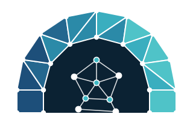

One binary. No cloud. Works offline.
Thawr ثور
A self-hosted WireGuard mesh VPN and zero-trust network, written in Go. One binary runs as the control server, as the client on every device and as the admin CLI. State is a single SQLite directory. Policy is a YAML file kept in git, default deny. Phones join through the official WireGuard app. Nothing phones home, and it starts and runs with no internet access.
Named after the cave near Makkah where the Prophet ﷺ and Abu Bakr found shelter during the Hijra: hidden, protected, reachable only by those who belong. That is the design goal of the network.
Thawr is built spec by spec with Claude Code. The design documents, from vision to threat model and acceptance tests, live in the repository, and the implementation follows them one at a time. Release candidates run on a VPS, a Mac and a phone.